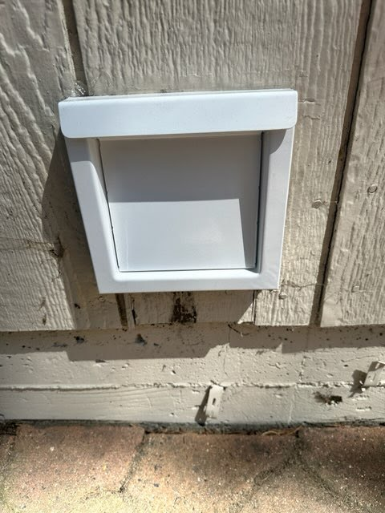
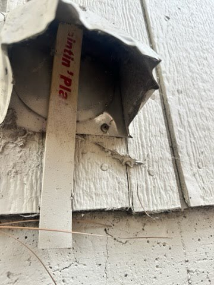
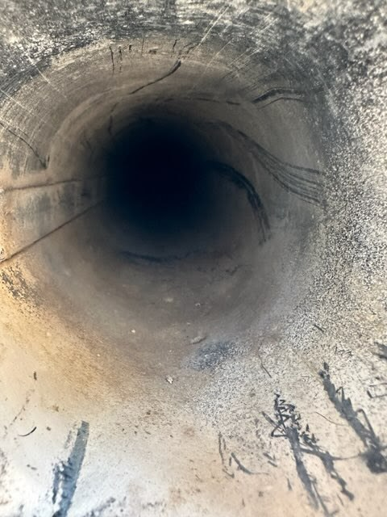
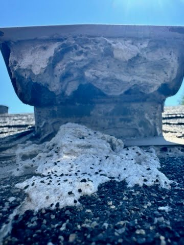
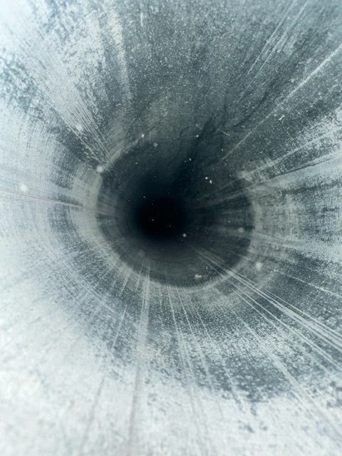

Dryer Vent Cleaning FAQ
Expert answers to your most common dryer vent questions from Reno's trusted professionals.
Expert answers to your most common dryer vent questions from Reno's trusted professionals.





For most families in Reno and Sparks, we recommend a professional dryer vent cleaning at least once a year. However, families who do more than 8 loads per week, homes with pets, or properties with longer vent runs (over 15 feet) should consider cleaning every 6-9 months. Warning signs you need immediate cleaning include clothes taking multiple cycles to dry, excessive heat in the laundry room, burning smells, or visible lint around the dryer. In Reno's dry climate, lint accumulates faster due to static electricity, making annual cleaning essential for fire prevention.
Professional dryer vent cleaning in Reno typically costs between competitive local rates depending on vent length and complexity. Standard vents up to 15 feet cost competitive rates, extended vents 15-25 feet cost professional estimates, and complex roof exits cost custom quotes. Most Reno homeowners pay around our standard rates for a typical cleaning. This investment pays for itself through energy savings - a clogged vent can increase your utility bills by on monthly energy costs.
While basic maintenance like cleaning the lint trap should be done yourself after every load, professional cleaning is recommended for the full vent system. DIY kits cannot match the suction power of commercial equipment and may push lint deeper into the vent. Professionals also inspect for damage, disconnections, and fire hazards that homeowners typically miss. If you attempt DIY cleaning, never use a leaf blower - this can create fire hazards by compacting lint.
Common signs of a clogged dryer vent include: clothes taking more than one cycle to dry, the dryer or laundry room feeling unusually hot, a burning smell during operation, lint accumulating behind or around the dryer, visible lint on the exterior vent, the exterior vent flap not opening during cycles, and your dryer shutting off mid-cycle due to overheating. If you notice any of these signs, call for professional cleaning immediately.
Neglecting dryer vent cleaning creates serious risks: fire hazard from lint buildup (dryers cause 2,900 home fires annually per FEMA), potential carbon monoxide buildup in gas dryers, increased energy bills from longer dry times, premature dryer failure from overheating, and mold growth from trapped moisture. The average dryer fire causes thousands in damage. Annual cleaning prevents all of these issues for at an affordable rate.
Professional dryer vent cleaning typically takes 30-60 minutes for standard residential vents. Longer or more complex systems with roof exits, multiple turns, or second-floor laundry rooms may take up to 90 minutes. We also include a safety inspection and airflow testing in every service call, which adds value but doesn't significantly extend the time.
Yes, absolutely. Clogged dryer vents are a leading cause of home fires. Lint is highly flammable, and when combined with the heat from your dryer (which can reach 125-135°F), it creates a serious fire hazard. The U.S. Fire Administration reports that dryer fires cause an estimated millions in property damage each year, with "failure to clean" being the leading factor. Regular professional cleaning is essential fire prevention.
If your dryer requires multiple cycles, the most common cause is a clogged or restricted vent. When airflow is blocked, moist air cannot escape and clothes stay damp. Other causes include a faulty heating element, broken moisture sensor, or simply overloading the dryer. Start by having your vent professionally cleaned - this solves the issue about 80% of the time and costs far less than appliance repair.
Rigid metal ducting (aluminum or galvanized steel) is the best material for dryer vents. It's code-compliant, fire-resistant, smooth inside for maximum airflow, and doesn't sag or trap lint. Avoid flexible plastic or vinyl vents - they're fire hazards and not allowed by code. Semi-rigid aluminum is acceptable only for the short transition directly behind the dryer. We install code-compliant rigid metal on all new installations and repairs.
Most building codes limit dryer vent runs to 25-35 feet maximum for 4-inch ducts. Each 90-degree elbow reduces the effective length by 5 feet, and each 45-degree elbow reduces it by 2.5 feet. Longer runs require a booster fan to maintain proper airflow. If your vent exceeds code limits, we can install a booster fan or re-route the vent for optimal performance and safety.
Absolutely. Professional dryer vent cleaning typically pays for itself through energy savings within 6-12 months. A clogged vent forces your dryer to work 30% harder, increasing utility bills by on monthly energy costs. Plus, you get fire prevention, faster drying times, and extended appliance life (dryers last 5-10 years longer with proper maintenance). It's one of the best home maintenance investments you can make.
Professional dryer vent cleaning uses commercial-grade equipment including high-powered vacuums (much stronger than shop vacs), rotating brush systems that scrub the duct walls, and compressed air to dislodge stubborn debris. We disconnect the dryer, clean from both ends of the vent, inspect with cameras when needed, and test airflow before and after. The process removes all lint, debris, and blockages throughout the entire system.
Dryer vents clog primarily from lint that bypasses the lint trap during normal operation - even with a clean trap, about 25% of lint escapes into the vent. Contributing factors include: flexible vinyl ducting that traps lint in ridges, long vent runs with multiple turns, crushed or kinked ducts behind the dryer, bird nests or pest intrusion at exterior vents, and infrequent cleaning. Pet hair and fabric softener residue accelerate buildup significantly.
Most dryer vent cleaning services focus on the exhaust vent system, not the dryer interior. However, we do clean the lint trap housing, the cavity around the lint trap, and the transition duct behind your dryer - areas where significant lint accumulates. For internal dryer cleaning, drum cleaning, or mechanical repairs, you'll need an appliance repair technician. We're happy to provide referrals to trusted local repair companies.
Tipping is not expected but always appreciated for exceptional service. If your technician goes above and beyond - like moving heavy items, providing extra advice, handling a particularly difficult job, or cleaning up exceptionally well - a small tip is a nice gesture. Equally valuable to small businesses like ours is a positive Google review, which helps other homeowners find reliable service.
Our friendly technicians are happy to answer any dryer vent questions.